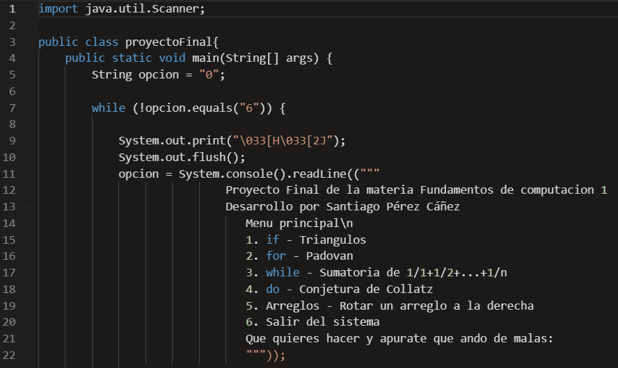
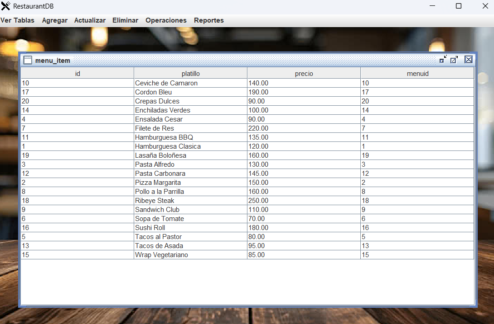
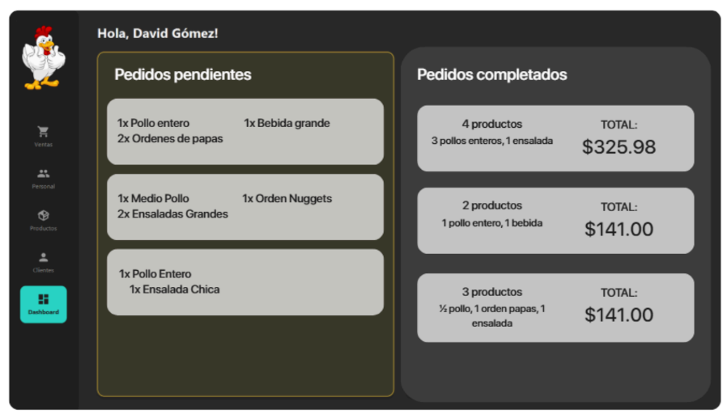
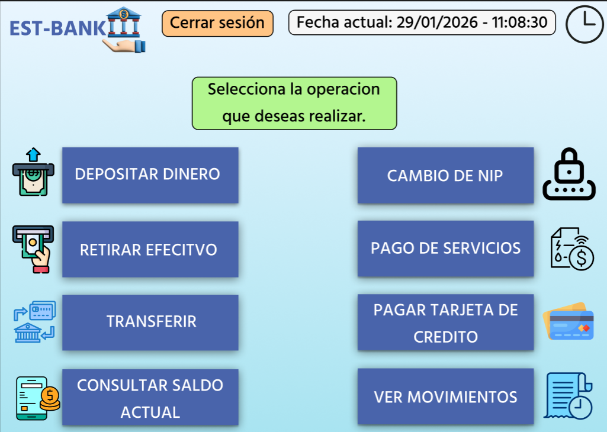
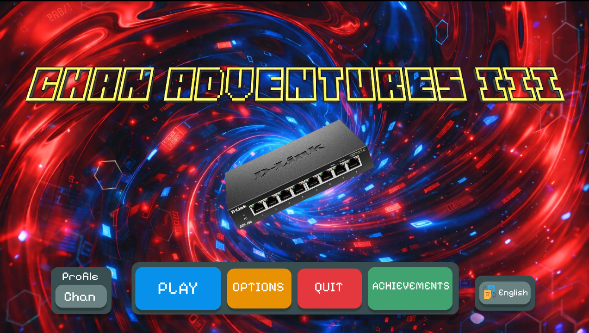
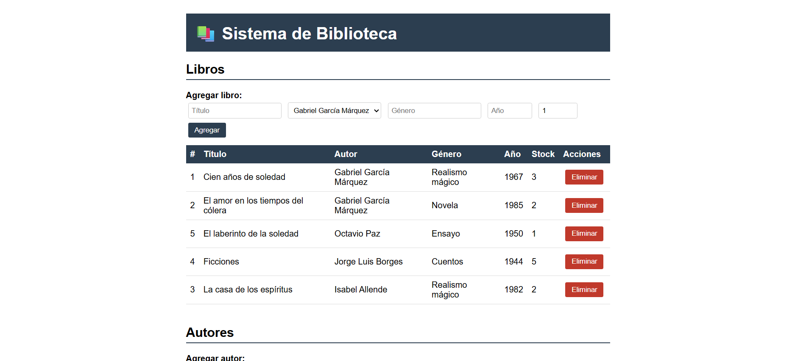

¿Quién soy?
Santiago Pérez Cáñez
Estudiante de 5to semestre de Ingeniería en Sistemas de Información en la Universidad de Sonora, con interés en el desarrollo Web y el manejo de base de datos, con experiencia desarrollando proyectos en ambos ámbitos.
Educación
CBTis no. 37 - Técnico en programación (Graduado en 2024)
Universidad de Sonora - Ing. en Sistemas de Información (5to semestre)
Habilidades
- HTML
- CSS
- JavaScript
- SQL
- Java
- Python
- Github
- Figma
Mis proyectos
Proyecto FdC I

Proyecto final de la materia Fundamentos de Computación I, usando estructuras de decisión y ciclos para diferentes problemas en Java.
Ver repositorioRestaurant CRUD

Proyecto de la materia Base de Datos I, donde se hace una interfaz para manejar operaciones básicas en un restaurante.
Ver repositorioPollosTech

Proyecto final de la materia de Desarrollo de Sistemas III, donde se hace un POS para una tienda de pollos.
Ver repositorioInterfaz de banco

Diseño de la interfaz de un menú de banco hecha en Figma.
Enlace del proyectoChan Adventures III

Juego hecho en Figma con el protagonista Chan, quien vive aventuras contra los virus informáticos.
Enlace del proyectoAPI Rest Biblioteca

Proyecto final de la materia de Desarrollo de Sistemas IV, donde se hace una API Rest de una biblioteca, permitiendo modificar autores, libros y préstamos.
Ver repositorio